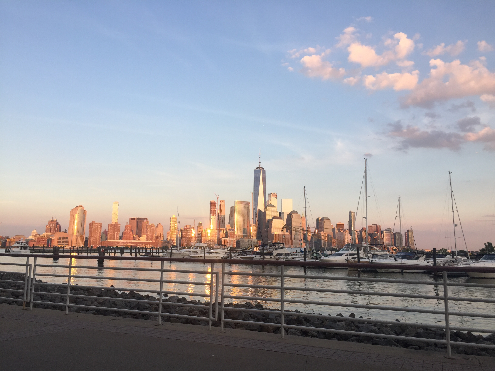

摆在面前的事情好多，突然觉着有很多的事情要去做，很多想法需要时间去实现，包括工作上的，学习上的还有生活上的。又到一年夏天，最近经常早上5点半起床，看看书，拿着excel写写读书笔记和内容摘要。下了班，回家随便吃一点，就喜欢到公寓附近的starbucks看看书，写写东西（最近在cousera上自学python和C#）。在建筑这个行业，工作越久越觉着危机感，大量重复的劳动，有朝一日要么做行业的技术上游，要么就在技术下游，等待转行或者一日被机器取代。

来美国的第5个年头，或许也就是最后一个年头，更加有种时间上的紧迫感，也更加觉着，在人生的黄金时代，能有一段独立一个人在一个陌生国家的经历是一件非常难得的事情。和国内的朋友聊天，也更加珍惜周末，下了班也有属于自己的时间，做一些自己想做的事情。有时候回想5年前来美国的时候，还是习惯于从小成长的那个小城市环境，人与人之间的那种互相熟悉和乡里乡亲，情感上的给予和相互支持。来纽约的三年间，越来越意识到个人的重要，和精神上的自给自足，以至于到目前的独立意识。很喜欢蒋勋的《孤独六讲》，其实说到底孤独是一个人的享受。精神上的独立与内心的充实，其所带来的满足感真的是一种很让人上瘾的东西。小时候，觉得自己在熟悉的人前能放得开，现在慢慢觉着，和陌生人的聊天会更加轻松。
一旦一个人有了自我意识，就越来越注重选择的目的与意义。独立意识让人不再盲从，这一点，中国的父母对子女似乎从小都没有培养，甚至为了能够方便管理而刻意压制。中国人的意识里，自我和自私还不能完全区分，特别是在一个崇尚集体主义的文化里。一个能够自我照顾的人，才有可能与能力去照顾别人。
确实，随着一个人的发展，和能力的变化，对集体的概念也会转变。当个体的能力不强，集体的力量很容易给个体带来安全感，被集体包容和被他人认可也是人的一种需要。当个体能力提高了，也就慢慢发现，一个集体对个人的限制。
随缘与随性，既然个体能够独立，那看待自己的选择与他人的选择也就没那么注重结果了。说白了，人活着一辈子，钱财和生命都带不走，说到底，活得开心最重要。很多事，如果从活着开心这个终极目标去考虑，结果是如何，状态是如何也就没那么重要的。其实很多时候，人的选择都不是理性的，甚至，我们所见的人，谈话的内容，或者手机上看的一条状态都可能会影响下一秒我们的所做的选择，而这个选择或许能够改变一生的状态。但即便如此，也是很enjoy我们自己的选择，既然我们被赋予自由意志，那就有自由选择和支配自己的权利。
此刻，夕阳折射下的哈德逊河，水面愈加波光粼粼。